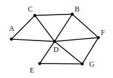
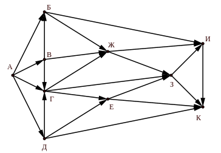

Единый государственный экзамен по ИНФОРМАТИКЕ и ИКТ
Инструкция по выполнению работы
Экзаменационная работа состоит из двух частей, включающих в себя 27 заданий. Часть 1 содержит 23 задания с
кратким ответом. Часть 2 содержит 4 задания с развёрнутым ответом.
На выполнение экзаменационной работы по информатике и ИКТ отводится 3 часа 55 минут (235 минут).
Ответы к заданиям 1–23 записываются в виде числа, последовательности букв или цифр. Ответ запишите в поле
ответа
в тексте работы, а затем перенесите в бланк ответов № 1.
Задания 24–27 требуют развёрнутого решения. В бланке ответов № 2 укажите номер задания и запишите его
полное
решение.
Все бланки ЕГЭ заполняются яркими чёрными чернилами. Допускается использование гелевой или капиллярной
ручки.
При выполнении заданий можно пользоваться черновиком.
Записи в черновике, а также в тексте контрольных измерительных материалов не учитываются при оценивании
работы.
Баллы, полученные Вами за выполненные задания, суммируются. Постарайтесь выполнить как можно больше заданий
и набрать наибольшее количество баллов.
После завершения работы проверьте, что ответ на каждое задание в бланках ответов № 1 и № 2 записан под
правильным номером.
Желаем успеха!
Ответами к заданиям 1–23 являются число, последовательность букв или цифр, которые следует записать в
БЛАНК ОТВЕТОВ № 1 справа от номера соответствующего задания, начиная с первой клеточки, без пробелов,
запятых и других дополнительных символов. Каждый символ пишите в отдельной клеточке в соответствии
с
приведёнными в бланке образцами.
Вычислите значение выражения $ {10A}_{16} + {100011101}_{2} - {112}_3 $.
В ответе запишите вычисленное значение в шестнадцатеричной системе счисления.
Паша заполнял таблицу истинности функции
$$ F = ((x \to y) \equiv (z \to w)) \lor (x \land w) $$ но успел лишь записать некоторые
неповторяющиеся
её строки, при которых функция ложна, даже не указав, какому столбцу таблицы соответствует каждая из
переменных $ x ,$ $ y ,$ $ z ,$ $ w .$
|
|
|
|
$ F $ |
| $ 1 $ |
|
|
|
$ 0 $ |
| $ 1 $ |
$ 1 $ |
|
|
$ 0 $ |
| $ 1 $ |
$ 1 $ |
$ 1 $ |
|
$ 0 $ |
Определите, какому столбцу таблицы соответствует каждая из переменных $ x ,$ $ y ,$ $ z ,$ $ w .$
В ответе напишите буквы $ x ,$ $ y ,$ $ z ,$ $ w $ в том порядке, в котором идут соответствующие им
столбцы (сначала буква, соответствующая первому столбцу; затем буква, соответствующая второму столбцу,
и т.д.). Буквы в ответе пишите подряд, никаких разделителей между буквами ставить не нужно.
Пример. Если бы функция была задана выражением $ F = \neg x \lor y ,$ зависящим от двух
переменных, а фрагмент таблицы имел бы вид
то первому столбцу соответствовала бы переменная $ y ,$ а второму столбцу – переменная $ x .$
В ответе следовало бы написать $ yx .$
На рисунке слева изображена схема дорог У-ского района, в таблице звёздочкой обозначено наличие дороги из
одного населённого пункта в другой. Отсутствие звёздочки означает, что такой дороги нет.

|
1 |
2 |
3 |
4 |
5 |
6 |
7 |
| 1 |
|
* |
* |
* |
* |
* |
* |
| 2 |
* |
|
|
|
* |
* |
|
| 3 |
* |
|
|
* |
|
|
|
| 4 |
* |
|
* |
|
* |
|
|
| 5 |
* |
* |
|
* |
|
|
|
| 6 |
* |
* |
|
|
|
|
* |
| 7 |
* |
|
|
|
|
* |
|
Каждому населённому пункту на схеме соответствует его номер в таблице, но неизвестно, какой именно номер.
Определите, какие номера населённых пунктов в таблице могут соответствовать населённым пунктам B и F на
схеме. В ответе запишите эти два номера в возрастающем порядке без пробелов и знаков препинания.
Ниже представлены два фрагмента таблиц из базы данных о жителях микрорайона. Каждая строка таблицы 2
содержит информацию о ребёнке и об одном из его родителей. Информация представлена значением поля ID в
соответствующей строке таблицы 1.
На основании приведённых данных определите наибольшее количество прямых наследниц, то есть дочерей, внучек,
правнучек и т.д. При вычислении ответа учитывайте только информацию из приведённых фрагментов таблиц.
| Таблица 1 |
| ID |
Фамилия И.О. |
Пол |
| 2052 |
Пузач Л.П |
Ж |
| 2053 |
Сухорук К.К |
М |
| 2065 |
Лопухова В.А |
Ж |
| 2086 |
Зарецкий А.А |
М |
| 2097 |
Сухорук Е.К |
Ж |
| 2118 |
Ларина О.Д |
Ж |
| 2124 |
Сухорук И.К |
М |
| 2135 |
Кольцова Т.Х |
Ж |
| 2156 |
Рац А.П |
М |
| 2181 |
Сухорук Т.Н |
М |
| 2203 |
Сухорук П.И |
Ж |
| 2212 |
Тесленко А.А |
Ж |
| 2227 |
Зарецкая С.А |
Ж |
| 2242 |
Рац П.А |
Ж |
| Таблица 2 |
| ID Родителя |
ID Ребёнка |
| 2052 |
2097 |
| 2052 |
2124 |
| 2053 |
2097 |
| 2053 |
2124 |
| 2097 |
2065 |
| 2097 |
2227 |
| 2097 |
2242 |
| 2124 |
2203 |
| 2135 |
2203 |
| 2156 |
2065 |
| 2156 |
2227 |
| 2156 |
2242 |
| 2212 |
2086 |
| 2212 |
2118 |
Для кодирования некоторой последовательности, состоящей из букв А, Б, В, Г, Д, Е, Ж решили использовать
неравномерный двоичный код, удовлетворяющий условию Фано. Для букв А, Б, В использовали соответственно
кодовые слова 1, 01, 001. Кроме того, известно, что оставшиеся 4 буквы имеют коды одинаковой длины.
Какова наименьшая возможная сумма длин кодовых слов всех семи букв?
Примечание. Условие Фано означает, что никакое кодовое слово не является началом другого
кодового слова. Это обеспечивает возможность однозначной расшифровки закодированных сообщений
На вход алгоритма подаётся натуральное число N. Алгоритм строит по нему новое число R
следующим образом.
- Строится двоичная запись числа N.
-
К этой записи дописываются справа ещё два разряда по следующему правилу:
-
складываются все цифры двоичной записи, и остаток от деления суммы на 2 дописывается в конец
числа (справа). Например, запись $ 11100 $ преобразуется в запись $111001 $;
-
над этой записью производятся те же действия – справа дописывается остаток от деления суммы цифр
на 2.
Полученная таким образом запись (в ней на три разряда больше, чем в записи исходного числа N)
является двоичной записью искомого числа R.
Укажите минимальное число R, которое больше 180 и может являться
результатом работы данного алгоритма. В ответе это число запишите
в десятичной системе счисления.
Дан фрагмент электронной таблицы. Из ячейки E4 в ячейку D3 была скопирована формула. При копировании адреса
ячеек в формуле автоматически изменились. Каким стало числовое значение формулы в ячейке D3?
|
A |
B |
C |
D |
E |
| 1 |
40 |
4 |
400 |
70 |
7 |
| 2 |
30 |
3 |
300 |
60 |
6 |
| 3 |
20 |
2 |
200 |
|
5 |
| 4 |
10 |
1 |
100 |
40 |
=\$B2 * E\$2 |
Примечание. Знак $ обозначает абсолютную адресацию
Запишите число, которое будет напечатано в результате выполнения следующей программы. Для Вашего удобства
программа представлена на двух языках программирования.
| Паскаль |
Python |
var n, s: integer;
begin
n := 1;
s := 46;
while n * n - s <= 199 do begin
s := s + 5;
n := n + 4
end;
write(n)
end.
|
n = 1
s = 46
while n * n - s <= 199:
s = s + 5
n = n + 4
print(n)
|
Автоматическая камера производит растровые изображения размером $ 600 \times 512 $ пикселей. Для кодирования
цвета каждого пикселя используется одинаковое количество бит, коды пикселей записываются в файл один за
другим без промежутков. В палитре используется 33 цвета. Определите минимальный размер файла с изображением.
Ответ укажите в Кбайт и запишите без обозначения.
Вася составляет 5-буквенные слова, в которых есть только буквы
П, Е, Р, Л, О, В, К, А
и которые начинаются с буквы К или содержат ровно одну гласную букву. Словом считается любая
допустимая последовательность букв, не обязательно осмысленная.
Сколько существует таких слов, которые может написать Вася?
Ниже на двух языках программирования записан рекурсивный алгоритм F.
| Паскаль |
Python |
procedure F(n: integer);
begin
write(3);
if n > 5 then begin
F(n - 3);
write(n);
F(n - 1);
end;
write(n);
end;
|
def F(n):
print(3)
if n > 5:
F(n - 3)
print(n)
F(n - 1)
print(n)
|
Запишите подряд без пробелов и разделителей все числа, которые будут напечатаны на экране при выполнении
вызова F(8). Числа должны быть записаны в том же порядке, в котором они выводятся на экран.
В терминологии сетей TCP/IP маской сети называется двоичное число, определяющее, какая часть IP-адреса
узла сети относится к адресу сети, а какая – к адресу самого узла в этой сети. Обычно маска
записывается
по тем же правилам, что и IP-адрес, – в виде четырёх байтов, причём каждый байт записывается в виде
десятичного числа. При этом в маске сначала (в старших разрядах) стоят единицы, а затем с некоторого
разряда – нули. Адрес сети получается в результате применения поразрядной конъюнкции к заданному
IP-адресу узла и маске.
Например, если IP-адрес узла равен 231.32.255.131, а маска равна 255.255.240.0, то адрес сети равен
231.32.240.0.
Для узла с IP-адресом 118.222.239.140 адрес сети равен 118.222.224.0. Чему равно наибольшее возможное
количество единиц в маске? Ответ запишите в виде десятичного числа.
При регистрации в компьютерной системе каждому пользователю выдаётся пароль, состоящий из 14 символов и
содержащий только символы из 26-символьного набора прописных латинских букв и десятичных цифр. В базе данных
для хранения сведений о каждом пользователе отведено одинаковое и минимально возможное целое число байт. При
этом используют посимвольное кодирование паролей, все символы кодируют одинаковым и минимально возможным
количеством бит. Кроме собственно пароля, для каждого пользователя в системе хранятся дополнительные
сведения, для чего выделено целое число байт; это число одно и то же для всех пользователей.
Для хранения сведений о 30 пользователях потребовалось 840 байт. Сколько байт выделено для хранения
дополнительных сведений об одном пользователе? В ответе запишите только целое число – количество байт.
Исполнитель Редактор получает на вход строку цифр и преобразовывает её. Редактор может выполнять две
команды, в обеих командах v и w обозначают цепочки цифр.
А) заменить(v, w)
Эта команда заменяет в строке первое слева вхождение цепочки v на цепочку w.
Например,
выполнение команды
заменить (111, 27)
преобразует строку 05111150 в строку 0527150.
Если в строке нет вхождений цепочки v, то выполнение команды заменить
(v, w)
не меняет эту строку.
Б) нашлось (v)
Эта команда проверяет, встречается ли цепочка v в строке исполнителя Редактор. Если она
встречается, то команда возвращает логическое значение «истина», в противном случае возвращает значение
«ложь». Строка исполнителя при этом не изменяется.
Цикл
ПОКА условие
последовательность команд
КОНЕЦ ПОКА
выполняется пока условие истинно.
В конструкции
ЕСЛИ условие
ТО команда1
КОНЕЦ ЕСЛИ
выполняется
команда1 (если условие истинно).
В конструкции
ЕСЛИ условие
ТО команда1
ИНАЧЕ команда2
КОНЕЦ ЕСЛИ
выполняется
команда1 (если условие истинно) или команда2 (если условие ложно).
Какая строка получится в результате применения приведённой ниже программы к строке, состоящей из 166
идущих подряд цифр 2? В ответе запишите полученную строку.
НАЧАЛО
ПОКА нашлось (2222) ИЛИ нашлось (666)
ЕСЛИ нашлось (2222)
ТО заменить (2222, 6)
ИНАЧЕ заменить (666, 2)
КОНЕЦ ЕСЛИ
КОНЕЦ ПОКА
КОНЕЦ
На рисунке представлена схема дорог, связывающих города, которые обозначены буквами. По каждой дороге можно
двигаться только в одном направлении, указанном стрелкой.
Сколько существует различных путей из города А в город К, проходящих через город Ж?

Значение арифметического выражения $ {27} ^ {192} - {9} ^ {250} + {3} ^ {98} - 127 $ записали в
системе счисления с основанием 3. Сколько цифр "2" содержится в этой записи?
В языке запросов поискового сервера для обозначения логической операции «ИЛИ» используется символ
«$\vert $», а для обозначения логической операции «И» – символ «$ \& $».
В таблице приведены запросы и количество найденных по ним страниц некоторого сегмента сети Интернет.
| Запрос |
Найдено страниц |
| C $ \& $ Java |
8 |
| C++ $ \& $ Java |
18 |
| C $ \& $ C++ |
13 |
| C |
23 |
| Java |
33 |
| C $ \&\ ($ C++ $ \vert $ Java $ ) $ |
13 |
Какое количество страниц будет найдено по запросу C $ \vert \ ($ C++ $ \& $ Java $ ) $?
Считается, что все запросы выполнялись практически одновременно, так что набор страниц, содержащих все
искомые слова, не изменялся за время выполнения запросов.
Для какого наименьшего целого неотрицательного числа $ А $ выражение
$$ (2x + 3y \ne 66) \lor (3x + 5 < A) \lor (2y + 3 < A) $$
тождественно истинно, т.е. принимает значение $ 1 $ при любых целых положительных $ x $ и $ y $?
В программе используется одномерный целочисленный массив A с индексами от 0 до 9. Значения элементов равны
5, 1, 6, 7, 8, 8, 7, 7, 6, 9 соответственно, т.е. A[0] = 5, A[1] = 1 и т.д.
Определите значение переменной c после выполнения следующего фрагмента этой программы, записанного
ниже на двух языках программирования.
| Паскаль |
Python |
c := 0;
for i := 1 to 9 do
if A[i - 1] >= A[i] then begin
t := A[i];
A[i] := A[i - 1];
A[i-1] := t
end
else
c:= c + 1;
|
с = 0
for i in range(1, 10):
if A[i - 1] >= A[i]:
t = A[i]
A[i] = A[i - 1]
A[i - 1] = t
else:
c = c + 1
|
Ниже на двух языках программирования записан алгоритм. Получив на вход натуральное десятичное число
x, этот алгоритм печатает два числа: a и b. Укажите наименьшее число
x, при вводе которого алгоритм печатает сначала 1, а потом 13.
| Паскаль |
Python |
var x, a, b, c: integer;
begin
readln(x);
a := 0; b := 0;
while x > 0 do begin
c := x mod 2;
if c = 0 then
a := a + 1
else
b := b + x mod 8;
x := x div 8;
end;
writeln(a);
writeln(b);
end.
|
x = int(input())
a = b = 0
while x > 0:
c = x % 2
if c == 0:
a = a + 1
else:
b = b + x % 8
x = x // 8
print(a)
print(b)
|
Определите число, которое будет напечатано в результате выполнения следующего алгоритма. Для Вашего удобства
алгоритм представлен на двух языках программирования.
Примечание. Функции abs и iabs
возвращают абсолютное значение своего входного параметра.
| Паскаль |
var a, b, t, M, R : longint;
function F(x: longint) : longint;
begin
F := abs(abs(x - 6) + abs(x + 6) - 16) + 2;
end;
begin
a := -20; b := 20;
M := a; R := F(a);
for t := a to b do begin
if (F(t) <= R) then begin
M := t;
R := F(t)
end
end;
write(M + R)
end.
|
| Python |
def f(x):
return abs(abs(x - 6) + abs(x + 6) - 16) + 2
a = -20
b = 20
M = a
R = F(a)
for t in range(a, b + 1):
if (F(t) <= R):
M = t
R = F(t)
print(M + R)
|
Исполнитель ПлюсМинус преобразует число, записанное на экране.
У исполнителя есть три команды, которым присвоены номера:
- Прибавить 1
- Прибавить следующее
- Умножить на 2
Первая из них увеличивает число на экране на 1, вторая прибавляет следующее по счету число (число 12 этой
командой увеличится до 25), третья умножает его на 2.
Программа для ПлюсМинус – это последовательность команд.
Сколько существует таких программ, которые преобразуют исходное число 2 в число 22 и при этом
траектория вычислений программы содержит число 11?
Траектория вычислений программы – это последовательность результатов выполнения всех команд программы.
Например, для программы 123 при исходном числе 7 траектория будет состоять из чисел 8, 17, 34.
Сколько существует различных наборов значений логических переменных
$ x_1 ,$ $ x_2 ,$ …, $ x_7 ,$ $ y_1 ,$ $ y_2 ,$ …, $ y_7 ,$
которые удовлетворяют всем перечисленным ниже условиям?
$ (x_1 \lor x_2) \land (x_1 \land x_2 \to x_3) \land (x_1 \lor y_1) = 1$
$ (x_2 \lor x_3) \land (x_2 \land x_3 \to x_4) \land (x_2 \lor y_2) = 1 $
…
$ (x_5 \lor x_6) \land (x_5 \land x_6 \to x_7) \land (x_5 \lor y_5) = 1 $
$ (x_6 \lor x_7) \land (x_6 \lor y_6) = 1 $
$ (x_7 \lor y_7) = 1 $
В ответе не нужно перечислять все различные наборы значений
переменных
$ x_1 ,$ $ x_2 ,$ …, $ x_7 ,$ $ y_1 ,$ $ y_2 ,$ …, $ y_7 ,$
при которых выполнена данная система равенств. В качестве ответа Вам нужно указать количество таких
наборов.

Не забудьте перенести все ответы в бланк ответов №1 в соответствии с инструкцией по выполнению
работы.
Проверьте, что каждый ответ записан в строке с номером соответствующего задания.
Для записи ответов на задания этой части (24–27) используйте БЛАНК
ОТВЕТОВ № 2. Запишите сначала номер задания (24, 25 и т. д.), а затем
полное решение. Ответы записывайте чётко и разборчиво.
На обработку поступает натуральное число $x$, меньшее $ {10} ^ {9} .$ Требуется написать программу, которая
выводит на экран наименьшее натуральное число $k$, что выполнено неравенство
$$(-12) + (-11) + … + k \gt x $$
Программист написал программу неправильно. Ниже эта программа для Вашего удобства приведена на двух языках
программирования.
| Паскаль |
Python |
var x, s, k: longint;
begin
readln(x);
s := 0;
k := -12;
while s < x do begin
s := s + k;
k := k + 1;
end;
write(s);
end.
|
x = int(input())
s = 0
k = -12
while s < x:
s = s + k
k = k + 1
print(s)
|
Последовательно выполните следующее.
- Напишите, что выведет эта программа при вводе числа 76.
- Приведите пример такого числа при вводе которого программа печатает то, что нужно.
-
Найдите допущенные программистом ошибки и исправьте их. Исправление ошибки должно затрагивать
только строку, в которой находится ошибка. Для каждой ошибки:
- выпишите строку, в которой сделана ошибка;
- укажите, как исправить ошибку, т.е. приведите правильный вариант строки.
Известно, что в тексте программы можно исправить ровно две строки так, чтобы она стала работать правильно.
Достаточно указать ошибки и способ их исправления для одного языка программирования.
Обратите внимание на то, что требуется найти ошибки в имеющейся
программе, а не написать свою, возможно, использующую другой алгоритм
решения.
Дан целочисленный массив из 100 элементов. Элементы массива могут принимать натуральные значения от 1 до
10 000 включительно. Опишите на одном из языков программирования алгоритм, находящий наименьшее нечётное
число, не оканчивающиеся на 7, а затем уменьшает каждый такой элемент на число, равное найденному минимуму.
Гарантируется, что хотя бы один такой элемент в массиве есть. В качестве результата необходимо вывести
изменённый массив, каждый элемент выводится с новой строчки.
Например, для исходного массива из шести элементов:
18
11
0
7
9
13
программа должна вывести следующий массив
18
2
0
7
0
4
Исходные данные объявлены так, как показано ниже на примерах для двух языков программирования.
Запрещается использовать переменные, не описанные ниже, но разрешается не использовать некоторые из
описанных переменных.
| Паскаль |
Python |
const
n = 100;
var
a: array [1..n] of integer;
i, j, m: integer;
begin
for i := 1 to n do
readln(a[i]);
…
end.
|
# допускается также
# использовать три
# целочисленные переменные i, j, m
a = []
n = 100
for i in range(0, n):
a.append(int(input()))
…
|
В качестве ответа Вам необходимо привести фрагмент программы, который должен находиться на месте
многоточия.
Вы можете записать решение также на другом языке программирования (укажите название и используемую
версию
языка программирования, например Free Pascal 2.6 или Python 3.7). В этом случае Вы должны использовать
те же самые исходные данные и переменные, какие были предложены в условии (например, в образце,
записанном
на языке Паскаль).
Два игрока, Петя и Ваня, играют в следующую игру. Перед игроками лежат две кучи камней. Игроки ходят по
очереди, первый ход делает Петя. За один ход игрок может добавить в одну из куч (по своему
выбору) два камня или увеличить количество камней в куче вдвое. Например, пусть в одной
куче
10 камней, а в другой 7 камней; такую позицию в игре будем обозначать (10, 7). Тогда за один ход можно
получить любую из четырёх позиций:
(12, 7), (20, 7), (10, 9), (10, 14).
Для того чтобы делать ходы, у каждого игрока есть неограниченное количество камней.
Игра завершается в тот момент, когда суммарное количество камней в кучах становится не менее 77.
Победителем считается игрок, сделавший последний ход, т.е. первым получивший такую позицию, при которой в
кучах
будет 77 или больше камней.
В начальный момент в первой куче было шесть камней, во второй куче – $ S $ камней; $ 1 \le S \le 71 .$
Будем говорить, что игрок имеет выигрышную стратегию, если он может выиграть при любых ходах
противника. Описать стратегию игрока – значит описать, какой ход он должен сделать в любой ситуации,
которая
ему может встретиться при различной игре противника. В описание выигрышной стратегии не следует
включать ходы играющего по этой стратегии игрока, не являющиеся для него безусловно выигрышными, т.е.
не
являющиеся выигрышными независимо от игры противника.
Выполните следующие задания.
- Укажите все такие значения числа $ S ,$ при которых Петя может выиграть за один ход.
-
Известно, что Ваня выиграл своим первым ходом после неудачного первого хода Пети. Укажите
минимальное значение $ S ,$ когда такая ситуация возможна.
Укажите такое значение $ S ,$ при котором у Пети есть выигрышная стратегия, причём одновременно
выполняются два условия:
- Петя не может выиграть за один ход;
- Петя может выиграть своим вторым ходом независимо от того, как будет ходить Ваня.
Для указанного значения $ S $ опишите выигрышную стратегию Пети.
Укажите значение $ S ,$ при котором одновременно выполняются два условия:
-
у Вани есть выигрышная стратегия, позволяющая ему выиграть первым или вторым ходом при любой
игре
Пети;
- у Вани нет стратегии, которая позволит ему гарантированно выиграть первым ходом.
Для указанного значения $ S $ опишите выигрышную стратегию Вани.
Постройте дерево всех партий, возможных при этой выигрышной стратегии Вани (в виде рисунка или
таблицы).
В узлах дерева указывайте позиции, на рёбрах рекомендуется указывать ходы. Дерево не должно содержать
партии, невозможные при реализации выигрывающим игроком своей выигрышной стратегии. Например, полное
дерево
игры не является верным ответом на это задание.
На вход программы поступает последовательность из N целых положительных чисел, все числа в
последовательности различны. Рассматриваются все пары различных элементов последовательности, находящихся
на расстоянии не меньше чем 4 (разница в индексах элементов пары должна быть 4 или более, порядок элементов
в паре неважен). Необходимо определить количество таких пар, для которых произведение
элементов делится на 29.
Описание входных и выходных данных
В первой строке входных данных задаётся количество чисел $ N $ $ (4 ≤ N ≤ 1000) .$
В каждой из последующих $ N $ строк записано одно целое положительное число, не превышающее 10 000.
В качестве результата программа должна вывести одно число: количество пар элементов, находящихся в
последовательности на расстоянии не меньше чем 4, в которых произведение элементов кратно 29.
Пример входных данных:
7
58
2
3
5
4
1
29
Пример выходных данных для приведённого выше примера входных данных:
5
Пояснение. Из 7 заданных элементов с учётом допустимых расстояний между ними можно составить 6
произведений: $ 58 \cdot 4 ,$ $ 58 \cdot 1 ,$ $ 58 \cdot 29 ,$ $ 2 \cdot 1 ,$ $ 2 \cdot 29 ,$
$ 3 \cdot 29 .$ Из них на 29 делятся 5 произведений.
Требуется написать эффективную по времени и памяти программу для решения описанной задачи.
Программа считается эффективной по времени, если при увеличении количества исходных чисел $ N $ в $ k $ раз
время работы программы увеличивается не более чем в $ k $ раз.
Программа считается эффективной по памяти, если память, необходимая для хранения всех переменных программы,
не превышает 1 килобайта и не увеличивается с ростом $ N .$
Максимальная оценка за правильную (не содержащую синтаксических ошибок и дающую правильный ответ при любых
допустимых входных данных) программу, эффективную по времени и памяти, – 4 балла.
Максимальная оценка за правильную программу, эффективную только по времени, – 3 балла.
Максимальная оценка за правильную программу, не удовлетворяющую требованиям эффективности, – 2 балла.
Вы можете сдать одну программу или две программы решения задачи (например, одна из программ
может быть менее эффективна). Если Вы сдадите две программы, то каждая из них будет оцениваться независимо
от другой, итоговой станет бо́льшая из двух оценок.
Перед текстом программы обязательно кратко опишите алгоритм решения.
Укажите использованный язык программирования и его версию.
Проверьте, чтобы каждый ответ был записан рядом с номером соответствующего задания.